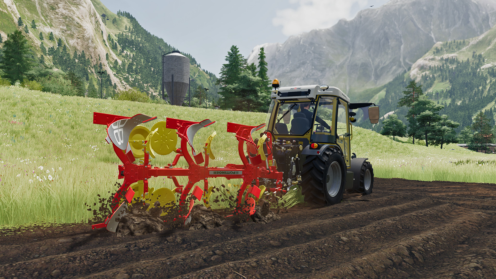
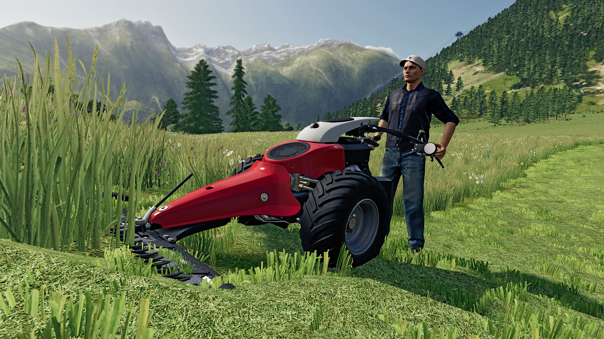
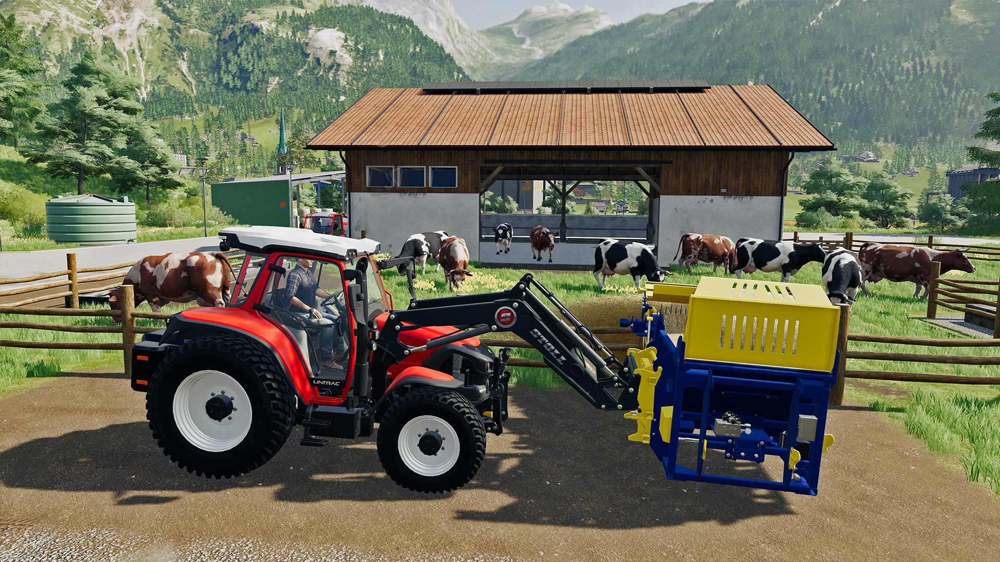

BlogBlog
Alpine Farming Tips: How to farm in Erlengrat
November 20, 2020
Are you not sure how to start out in Erlengrat, our new map featured in the Alpine Farming Expansion? Don't worry! Here are some tips that might come in handy when arriving in the mountainous scenery with its vast green fields:
Create your own fields - anywhere!
The focus of the expansion lies on grassland. Hence, why we provided you with a lot of specialized tools made to operate in hilly surroundings. Yes, there is lots of grass around Erlengrat. If you want to focus more on crops you can sow them on the fields, of course. But - not enough fields available for you? Make your own, then! Buy the land, fetch a plow, activate the 'field creation' option in the game-settings and start plowing wherever you want to create a field.
Special train, heading for Felsbrunn
In Erlengrat, the train works a little bit different from what you're used to. Now, the train doesn't revolve around this map alone but actually leaves Erlengrat to the east. Where it's going you ask? It's going to Felsbrunn. This allows you to sell your goods at a selling point only available by train.
When selling goods, look at the listings in the menu to find out if it's worth to halt the train. Which you actually have to do by yourself. There are two silos as well as a loading area east to the train station - in case you want to load it up with tree trunks it's easily accessible.
To load your goods onto the train you have to board it and stop it at the desired loading station. Then, proceed as usual and let the train leave for Felsbrunn.
Grassland farming 101
We provided you with a lot of machines designed to be operated on this kind of terrain. Most importantly, with big machines you will run into problems on hilly terrain. First time grass harvesting? Let's take a quick look into grass, hay and silage.
Grass
There are various mowers included in the Alpine Farming Expansion: PÖTTINGER offers the NOVAALPIN 261, NOVACAT 301 ALPHA MOTION Master as well as the NOVADISC 812. On top of that, there's the Sepp Knüsel F 240 and the Aebi CC 66. The latter is not an attachment but a stand-alone machine for manual use - especially useful in tight spaces.
Mow the grass on your fields and rake it up with a windrower. Either use a loading wagon to pick up the grass or use a baler and produce bales. We advise you to buy the optional bale turner in the shop, too. It'll make it easier to unload round bales without them rolling down the hill uncontrolled. It will happen, if you're new to the baling business.
Hay
To produce hay, you need to use a tedder for the grass to dry. Two options from PÖTTINGER here: The ALPINHIT 4.4 H and the HIT 8.9 T. After grass turned to hay, use either a baler to produce bales to sell or a loading wagon to pick it up and store it in a hay loft.
Silage
Silage is obtained in one of two ways: By keeping grass in a covered bunker silo or by wrapping grass bales. Wait until it's fermented and enjoy having made silage. You can now use silage for feeding (more on that below) or sell it at the biogas plant.
Animal husbandry in the Alps
Cows are the stars of the Alpine animal kingdom. If you start as a 'new farmer' you already have some of them on your farm. All important machines too, of course. Since the Chocolatier and Cheese Factory are the most important businesses in town, there is a steady demand for milk. Therefore, we advise you to focus on them and meet those demands.
Good thing, there's enough food for them around. To keep your cows giving milk and have them somewhat satisfied, you'll need water and grass or hay - those are the minimum requirements. You can also feed them silage if you have produced any.
To make them even more happy and productive, you should also provide them with straw for their bedding (therefore, you should sow some grains to get straw), clean out their feeding area regularly and produce Total Mixed Ration (TMR) for food. If you provide them with bedding and TMR, their productivity is boosted to 100%.
Requirements to produce TMR
- You'll need a mixing machine like the Kuhn RA 142
- Fill it with grass, hay and silage to produce TMR
Additional Tips
- You can buy each TMR ingredient at the shop
- TMR Ingredients can be added loose or in bale form
Have fun in Erlengrat! If you don't own the Alpine Farming Expansion for Farming Simulator 19 already, it's available on PC & Mac, PlayStation 4, Xbox One and Google Stadia.